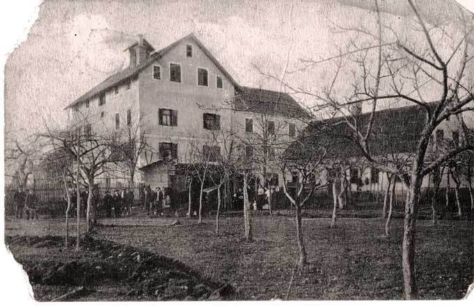

O podjetju AgroHop
Podjetje Agrohop Ivan Jošt s.p. je družinsko podjetje in je neposredno vezano na kmetijo Joštovih iz Gotovelj pri Žalcu, po domače Cesarjevih. Na kmetiji se ukvarjamo z rastlinsko pridelavo, predvsem s hmeljarstvom, pridelavo lucerne in soje, ki je naša posebnost, saj smo eni redkih pridelovalcev te cenjene stročnice pri nas. Na kmetiji pa imamo tudi vso potrebno mehanizacijo za predelavo teh (ali drugih) pridelkov, tako npr. peletirko za hmelj ali lucerno, sušilnico, stiskalnico, ekstruder za sojo, tudi mini pivovarno, hkrati pa smo tudi eden od registriranih centrov za oznamkovanje (certificiranje) hmelja.
Podjetje Agrohop je torej usmerjeno predvsem v kmetijsko panogo. Naš primarni dobavitelj je domača kmetija, kupujemo pa tudi pridelke od drugih kmetov. Glavne aktivnosti podjetja so:
- predelava in prodaja hmelja (na domači in tuji trg)
- predelava in prodaja lucerne
- predelava in prodaja rumene soje
- oznamkovanje hmelja
- sušenje vseh vrst kmetijskih pridelkov
- mini pivovarna
Nosilec podjetja je Ivan Jošt. Podjetje se je iz prejšnje oblike d.o.o. leta 2009 preoblikovalo v s.p. zaradi lažjega poslovanja. V podjetju so zaposleni družinski člani, za delovne konice pa najamemo najeto delovno silo.
Na kmetiji postavljamo tudi novo gospodarsko poslopje, ki bo v pritličju služilo kot prostor za shranjevanje kmetijske mehanizacije, v nadstropju pa kot novi prostori za posodobljeno rastlinsko predelavo.
Kontakt
Agrohop Ivan Jošt s.p.
Gotovlje 31
3310 Žalec
Slovenija
Telefon: +386 3 571 81 52
Telefaks: +386 3 571 60 42
Mobilni telefon: +386 31 357 329 (Ivan Jošt)/p>
Mobilni telefon: +386 40 427 319 (Tanja Jošt)
E mail: agrohop@siol.net
WWW: www.agrohop.com
View Agrohop in a larger map
Opis Kmetije
Kmetija Jošt, po domače pri Cesarjevih, se nahaja v Gotovljah ob glavni cesti Žalec – Celje, v osrčju Savinjske doline. Ima status zaščitene kmetije in je ena najstarejših kmetij na tem območju. Sodi med srednje velike kmetije, ki danes obsega cca 10,50 ha lastnih in 47,80 ha najetih kmetijskih zemljišč ter cca 30 ha gozdov. Ukvarjamo se izključno s poljedelstvom, saj smo živinorejo opustili pred približno 20 leti. Večina kmetijskih zemljišč je zasajenih s hmeljem, ostalo pa pridelujemo povečini sojo in lucerno.
Po povojni nacionalizaciji nam je ostalo 10 ha obdelovalne zemlje in 20 ha gozda, vendar je kljub temu v času do osamosvojitve Slovenije l. 1991 kmetija uspela ostati uspešna in napredna. Tako smo se intenzivno ukvarjali s hmeljarstvom, živinorejo, sadjarstvom in gozdarstvom. Po letu 1991 smo zaradi razpada prejšnjega sistema počasi prešli na tržno gospodarstvo, zato smo zaradi nerentabilnosti najprej opustili sadjarstvo in nato še živinorejo.
Že mnogo let se na kmetiji ukvarjamo tudi s hmeljsko trgovino (v okviru podjetja) in hmeljsko predelavo, saj imamo hmeljsko briketirko in stiskalnico, hmeljsko sušilnico, ki jo lahko uporabljamo tudi kot sušilnico za koruzo, sojo, lucerno itd. in še razno drugo uporabno mehanizacijo. V preteklosti smo imeli na kmetiji tudi mini pivovarno, ki pa je trenutno v fazi ponovnega zagona. Pred dvema letoma smo se lotili gradnje obsežnega gospodarskega poslopja, ki bo služilo v pritličju kot prostor za shranjevanje traktorjev, prikolic, kmetijskih priključkov idr., v nadstropju pa kot prostor za predelavo kmetijskih proizvodov, možno ga bi bilo tudi oddati v najem. Na strehi načrtujemo sončno elektrarno.
Zgodovina
Po pisnih virih segajo začetki naše kmetije v čas nasledstvenega boja med Habsburžani in celjskimi grofi. V ta čas sodi delo viteza Jošt Soteškega, ki je v svojem času užival določene ugodnosti celjskih knezov, pozneje pa tudi velikonemških cesarjev. V tem času je zaradi dobrih del pridobil določeno premoženje, ki ga je kasneje razdelil med svoje številne potomce. Tako je del lastnine, na kateri še danes stoji domačija Joštovih, dobil njegov vnuk. Ker je bilo zemljišče in posestvo dano od cesarja, se je tako oprijelo tudi domače ime »Pri Cesarjevih«.
Slika »stara kmetija«: Razglednica Joštove domačije iz pred II. svetovno vojno. Gospodarsko poslopje je stara hmeljska sušilnica, desno pa hiša. Če podrobneje pogledamo, vidimo več moških, žensk, otrok in nekaj konjev.
Kmetija je bila že pred II. svetovno vojno zelo napredno usmerjena. Imela je status veleposestva z mnogimi dopolnilnimi dejavnostmi. Stari oče Mihael Jošt je bil namreč zelo razgledan gospodar, saj je že takoj po prihodu s fronte v Galiciji leta 1920 postavil prvo elektrarno na reki Strugi, ki je napajala domačo električno žago in dajala luč zaselkom oziroma vasem Roje, Gotovlje, Podlog in delu Žalca in Šempetra. Poleg tega je v letih pred II. svetovno vojno v soteski Socka zgradil prvo parno žago, ki jo je poganjala lokomotiva, in v Celju velik rečni mlin na potoku Ložnica, ki ga je vse do 60. let poganjala vodna energija z lastno elektrarno (Joštov mlin). Na kmetiji se je poleg omenjenih izvajala še keramična dejavnost s proizvodnjo keramičnih izdelkov. Po njegovi smrti leta 1952 je kmetijo prevzel sin Anton, ki jo je vodil do leta 1967, ko sta skupaj z bratom Martinom umrla v prometni nesreči. Od tega leta dalje sta na kmetiji gospodarila njegova žena Elizabeta in sin Ivan, ki jo vodi še sedaj. Njena hči Majda Virant je bila mednarodno priznana strokovnjakinja na Inštitutu za hmeljarstvo in pivovarstvo v Žalcu, kjer je bila dolga leta vodja Oddelka za pivovarstvo.
Hmelj
Hmelj (Humulus Lupulus L.) je večletna dvodomna rastlina, ki spada v družino Konopljine (Cannabainaceae) in se uporablja predvsem v pivovarstvu. Gojimo samo ženske rastline, saj je v neoplojenih dozorelih storžkih veliko več lupulinskih žlez, prav lupulin pa je tista sestavina hmelja, ki določa njegovo vrednost. Hmeljska stebla se s kaveljčki oprimejo opore in lahko zrastejo od 7 do 9 metrov visoko. Vsako pomlad je zato treba napeljati vodila in očistiti poganjke. Konec avgusta ali v začetku septembra hmelj dozori in ga je potrebno obrati, posušiti in spraviti.
Hmelj se uporablja skorajda izključno v pivovarstvu, le v manjši meri v zeliščni medicini, čeprav ima dokazane zdravilne učinke. V 100 litrih piva je le nekaj gramov hmelja, kljub temu pa brez njega ne gre, saj daje hmelj pivu značilen grenak okus, obstojnost in aromo. Različne sorte hmelja se uporabljajo tudi za različne vrste piva, saj vsaka sorta daje pivu svoje specifične lastnosti.
V naših nasadih gojimo sorti Auroro in Bobek, poleg teh pa je pri nas razširjena še sorta Savinjski Golding.
V ljudskem zdravilstvu hmelj slovi predvsem po svoji pomirjevalnih in uspavalnih učinkih, zmanjšuje napetost in krče v mišicah, povečuje izločanje urina, spodbuja tek, služi pa tudi kot afrodiziak za moške. Priporočajo ga za miren spanec in lajšanje prebavnih motenj živčnega izvora, med katere sodi tudi sindrom razdraženega črevesja. V kulinariki se uporabljajo mladi poganjki.
Lucerna
Lucerna (Medicago sativa L.) je večletna metuljnica in pomembna krmna rastlina v proizvodnji voluminozne krme za prehrano živali, saj zagotavlja velik pridelek kakovostne beljakovinske krme. Vsebuje veliko encimov, vitaminov, alkaloidov in drugih pomembnih snovi, hkrati pa je hitro prebavljiva, zaradi česar se tudi poveča ješčnost živali. Uporabljamo jo za zeleno krmljenje, kot tudi za siliranje ali sušenje kot seno. Lahko jo tudi zmeljemo v brikete, s čimer se podaljša njena obstojnost in olajša skladiščenje, ohranijo pa se vse njene dobre lastnosti. Lucerno kosimo približno štirikrat na leto v času brstenja.
Soja
Soja (Glycine max L.) je pomembna beljakovinska stročnica, ki je po svetu vse bolj razširjena. Uporabljamo jo lahko v prehrani ljudi ali za krmo živali, v zadnjem času pa tudi kot energetski vir.
Soja je neprekosljiv vir beljakovin za ljudi, ki iz zdravstvenih ali načelnih vzrokov ne uživajo mesa. Za prehrano se uporablja sojino zrnje, sojina moka, sojino olje, sojino mleko in izdelki iz njega (maslo, sir – tofu). Iz sojine moke se lahko pripravijo mesni nadomestki v obliki zrezkov, polpetov ipd., dodajamo pa jo lahko tudi v kruh ali pecivo.
Za prehrano živali je uporabna cela rastlina kot voluminozna krma, še zlasti za krave molznice ali goveje pitance. Krmimo jo zeleno (presno in silirano) ali posušeno kot seno in sicer samostojno ali v kombinaciji s koruzo. Krmimo lahko tudi mlade stroke in zrnje ali toplotno obdelano suho zrnje in stranske proizvode pri pridelavi sojinega olja (tropine), vse to pa predstavlja zelo močna živinsko krmo.
Glavni problem pridelave in uporabe soje v svetu je vsebnost GSO, saj je večina pridelane soje že gensko spremenjena. Na naših zemljiščih pridelujemo izključno gensko nespremenjeno sojo sorte Kuna hrvaškega porekla, za seme pa uporabljamo lasten pridelek. Ker v bližini ni drugih sojinih polj, tudi ni nevarnosti, da bi se naša soja okužila z morebitno gensko spremenjeno. Ker je soja razmeroma nezahtevna rastlina, na njej ne uporabljamo nikakršnih kemičnih varovalnih sredstev oz. fitofarmacevtskih pripravkov, je torej naravno, ekološko pridelana (brez certifikata).